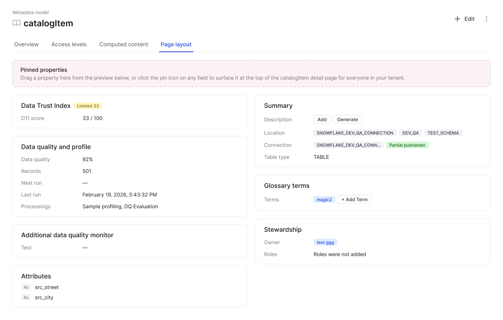
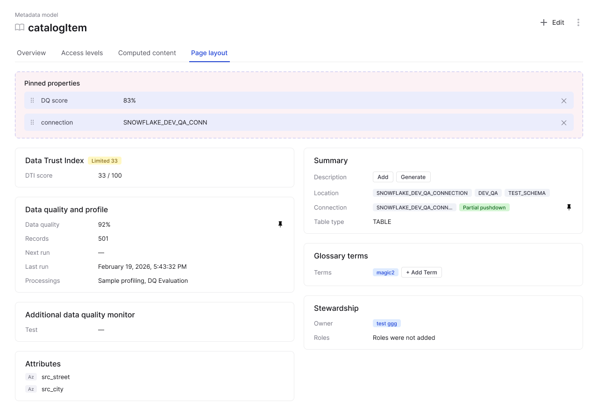

Customers routinely extend Ataccama ONE's metadata model with custom properties, Region, Data Owner, Classification. The historical way to surface them on entity detail pages was a Monaco-based JSON editor hidden behind a feature flag, unusable by anyone who didn't write code.
Customer-facing teams complained when the flag came off. The brief: remove the JSON editor entirely and replace it with something an admin or a consultant could actually use.
The product inbox held the evidence, concentrated demand across DG, DQ, ONE Platform, and Agentic, going unaddressed because the existing solution was developer-only.
The audience was specific: tenant admins and consultants, people who understand the metadata model conceptually but don't write code. Explicitly not for end users or developers.
A two-zone model: a full-width pinned-properties band where admins curate which fields appear at the top, sitting above a locked default layout that Ataccama owns.
The pattern is "shell-plus-accent", universal across every competitor I studied (Jira, Collibra, Salesforce, Atlan, Harness, ServiceNow). A dominant, system-controlled layout with one explicit surface for promoting individually-important content.


Header, widgets, column structure, all curated by Ataccama. Matches Collibra's "system content controlled by Collibra."
A single pinned-properties band. Admin curates which fields appear there. Everything else stays where Ataccama designed it.
Every data-catalog peer is tenant-scoped. Per-user pins would have broken consultant-shares-screens consistency.
The real customer use case is field-level. Section-level customization was over-coarse for the actual need.
V5 wasn't my first idea, it was synthesis. Without V1–V4 showing what didn't work, V5 would have looked like V1.
On building five prototype variants
I brought a full layout-editor prototype to my first PM meeting, expecting feedback on interactions. Matej proposed the pin concept in five minutes. Customization has a cost, product identity, test stability, upgrade path.
Going deep on six competitors surfaced one universal pattern: shell-plus-accent. A dominant, system-controlled layout with one explicit surface for promoting individually-important content.
I brought a lean recommendation on each of six open decisions, not open exploration, "take this position and tell me why I'm wrong." We closed all six in 30 minutes.
Let PM bring constraints. Don't fall in love with your prototype.
"12+ upvotes, Collibra 46% → 74%" is a different conversation than "I think we need this."
Code iteration is fast but expensive when the direction isn't validated.
V5 was synthesis. Without exploration, "first idea" is rarely the answer.
Strong defaults invite quick critique. Open questions invite long meetings.